Kontantstrøm (cash flow) er bevegelsen av kontanter inn og ut av en bedrift over en bestemt periode. Det er et av de viktigste målene på bedriftens finansielle helse og evne til å opprettholde drift, betale regninger og investere i vekst. Kontantstrøm skiller seg fra resultatregnskap ved at det fokuserer på faktiske kontantbevegelser, ikke påløpte inntekter og kostnader.
Hva er Kontantstrøm?
Kontantstrøm representerer den faktiske bevegelsen av kontanter og bankinnskudd i en bedrift. Det viser hvor mye kontanter som kommer inn (innstrøm) og hvor mye som går ut (utstrøm) i løpet av en periode. Kontanter oppbevares ofte i en kontantkasse før de settes inn i bank.

Viktige Kjennetegn ved Kontantstrøm:
- Faktiske transaksjoner: Kun reelle kontantbevegelser registreres
- Tidsbasert: Måles over spesifikke perioder (månedlig, kvartalsvis, årlig)
- Likviditetsfokus: Viser bedriftens evne til å møte kortsiktige forpliktelser og opprettholde likviditet. Effektiv likviditetsstyring krever systematisk overvåking og planlegging av kontantstrømmer
- Operasjonell indikator: Reflekterer den faktiske driftseffektiviteten
- Kontantkjøp: Utbetalinger for varer og tjenester betalt kontant påvirker kontantstrømmen; se Kontantkjøp.
Typer Kontantstrøm
Kontantstrøm deles inn i tre hovedkategorier som hver gir innsikt i ulike aspekter av bedriftens aktiviteter.
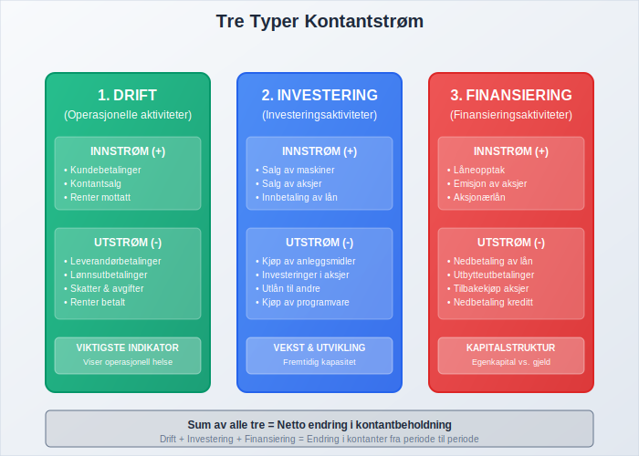
1. Kontantstrøm fra Driftsaktiviteter
Dette er kontantstrømmen fra bedriftens kjernevirksomhet og den viktigste indikatoren på operasjonell helse.
Innstrøm fra drift:
- Kontantbetalinger fra kunder
- Renter mottatt
- Utbytte mottatt fra investeringer
Utstrøm fra drift:
- Betalinger til leverandører
- Lønnsutbetalinger
- Skatter og avgifter
- Renter betalt
2. Kontantstrøm fra Investeringsaktiviteter
Kontantstrømmer knyttet til kjøp og salg av anleggsmidler og langsiktige investeringer.
Innstrøm fra investeringer:
- Salg av maskiner og utstyr
- Salg av aksjer og obligasjoner
- Innbetaling av lån gitt til andre
Utstrøm fra investeringer:
- Kjøp av anleggsmidler
- Investeringer i aksjer og obligasjoner
- Utlån til andre selskaper
3. Kontantstrøm fra Finansieringsaktiviteter
Kontantstrømmer fra endringer i bedriftens egenkapital og gjeld.
Innstrøm fra finansiering:
- Låneopptak
- Emisjon av nye aksjer
- Aksjonærlån til AS
Utstrøm fra finansiering:
- Nedbetaling av lån
- Utbytteutbetalinger
- Tilbakekjøp av egne aksjer
Kontantstrømoppstilling
For en mer detaljert gjennomgang av hvordan man utarbeider og analyserer en kontantstrømoppstilling, se Hva er Kontantstrømoppstilling? En Komplett Guide til Kontantstrømoppstilling i Norge. Kontantstrømoppstillingen er en av de tre hovedrapportene i finansregnskapet, sammen med balansen og resultatregnskapet.
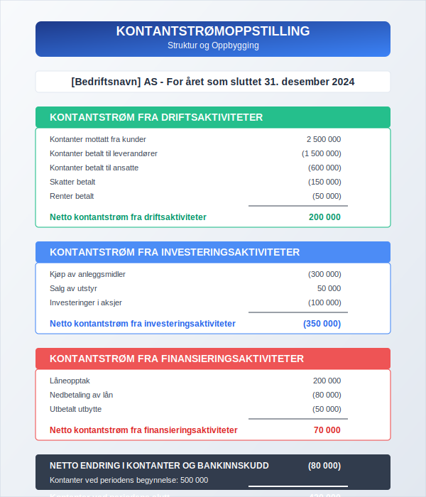
Eksempel på Kontantstrømoppstilling:
| Kontantstrømoppstilling | År 1 | År 2 |
|---|---|---|
| DRIFTSAKTIVITETER | ||
| Kontanter fra kunder | 2 500 000 | 2 800 000 |
| Kontanter til leverandører | (1 500 000) | (1 650 000) |
| Kontanter til ansatte | (600 000) | (650 000) |
| Skatter betalt | (150 000) | (180 000) |
| Netto kontantstrøm fra drift | 250 000 | 320 000 |
| INVESTERINGSAKTIVITETER | ||
| Kjøp av maskiner | (200 000) | (100 000) |
| Salg av utstyr | 50 000 | 30 000 |
| Netto kontantstrøm fra investering | (150 000) | (70 000) |
| FINANSIERINGSAKTIVITETER | ||
| Låneopptak | 100 000 | 0 |
| Nedbetaling av lån | (80 000) | (90 000) |
| Utbetalt utbytte | (50 000) | (75 000) |
| Netto kontantstrøm fra finansiering | (30 000) | (165 000) |
| NETTO ENDRING I KONTANTER | 70 000 | 85 000 |
| Kontanter ved periodens start | 150 000 | 220 000 |
| Kontanter ved periodens slutt | 220 000 | 305 000 |
Kontantstrøm vs. Resultat
En av de viktigste forskjellene i regnskap er mellom kontantstrøm og resultat. Mange bedrifter kan vise fortjeneste men likevel ha negativ kontantstrøm.
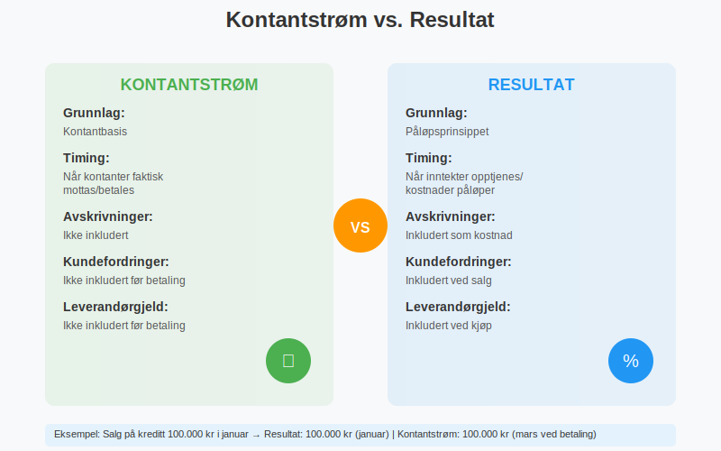
Hovedforskjeller:
| Aspekt | Kontantstrøm | Resultat |
|---|---|---|
| Grunnlag | Kontantbasis | Påløpsprinsippet |
| Timing | Når kontanter faktisk mottas/betales | Når inntekter opptjenes/kostnader påløper |
| Avskrivninger | Ikke inkludert | Inkludert som kostnad |
| Kundefordringer | Ikke inkludert før betaling | Inkludert ved salg |
| Leverandørgjeld | Ikke inkludert før betaling | Inkludert ved kjøp |
Eksempel på Forskjellen:
Scenario: En bedrift selger varer for 100 000 kr på kreditt i januar, men får betalt i mars.
- Resultatregnskap: Viser 100 000 kr i inntekt i januar
- Kontantstrøm: Viser 100 000 kr innstrøm i mars
Kontantstrømanalyse
Kontantstrømanalyse er prosessen med å evaluere bedriftens kontantstrømmer for å vurdere finansiell helse og operasjonell effektivitet.

Viktige Nøkkeltall for Kontantstrømanalyse:
1. Operasjonell Kontantstrømmargin
Formel: (Kontantstrøm fra drift ÷ Omsetning) × 100
Tolkning: Viser hvor mye av hver salgskrone som blir til kontanter fra drift.
2. Kontantstrøm per Aksje
Formel: Kontantstrøm fra drift ÷ Antall utestående aksjer
Tolkning: Sammenlignbart med resultat per aksje, men basert på kontantstrøm.
3. Kontantkonverteringsratio
Formel: Kontantstrøm fra drift ÷ Nettoresultat
Tolkning: Viser hvor godt bedriften konverterer resultat til kontanter.
Analyse av Kontantstrømmønstre:
| Mønster | Drift | Investering | Finansiering | Tolkning |
|---|---|---|---|---|
| Vekstfase | + | - | + | Positiv drift, investerer, henter kapital |
| Moden bedrift | + | - | - | Positiv drift, moderate investeringer, betaler utbytte |
| Nedgangsfase | - | + | + | Negativ drift, selger eiendeler, henter kapital |
| Restrukturering | - | + | - | Negativ drift, selger eiendeler, betaler ned gjeld |
Kontantstrømprognose
Kontantstrømprognose er et verktøy for å forutsi fremtidige kontantbehov og planlegge likviditetsstyring. Effektiv kontantstrømprognose er grunnleggende for god arbeidskapitalstyring.

Komponenter i Kontantstrømprognose:
Kortsiktig Prognose (1-12 måneder):
- Detaljert månedlig/ukentlig planlegging
- Basert på konkrete kontrakter og avtaler
- Inkluderer sesongvariasjoner
- Fokus på arbeidskapitalstyring
Langsiktig Prognose (1-5 år):
- Strategisk planlegging
- Basert på budsjetter og forretningsplaner
- Inkluderer store investeringsprosjekter
- Fokus på finansieringsbehov
Eksempel på Månedlig Kontantstrømprognose:
| Måned | Jan | Feb | Mar | Apr | Mai | Jun |
|---|---|---|---|---|---|---|
| INNSTRØM | ||||||
| Kontantsalg | 200 000 | 220 000 | 250 000 | 230 000 | 240 000 | 260 000 |
| Kundefordringer | 150 000 | 180 000 | 200 000 | 190 000 | 200 000 | 210 000 |
| Total innstrøm | 350 000 | 400 000 | 450 000 | 420 000 | 440 000 | 470 000 |
| UTSTRØM | ||||||
| Leverandører | 180 000 | 200 000 | 220 000 | 210 000 | 220 000 | 230 000 |
| Lønn | 120 000 | 120 000 | 120 000 | 120 000 | 120 000 | 120 000 |
| Husleie | 25 000 | 25 000 | 25 000 | 25 000 | 25 000 | 25 000 |
| Andre kostnader | 15 000 | 18 000 | 20 000 | 17 000 | 19 000 | 21 000 |
| Total utstrøm | 340 000 | 363 000 | 385 000 | 372 000 | 384 000 | 396 000 |
| Netto kontantstrøm | 10 000 | 37 000 | 65 000 | 48 000 | 56 000 | 74 000 |
| Akkumulert saldo | 10 000 | 47 000 | 112 000 | 160 000 | 216 000 | 290 000 |
Kontantstrømstyring
Effektiv kontantstrømstyring er kritisk for bedriftens overlevelse og vekst. Det handler om å optimalisere innstrøm og kontrollere utstrøm.
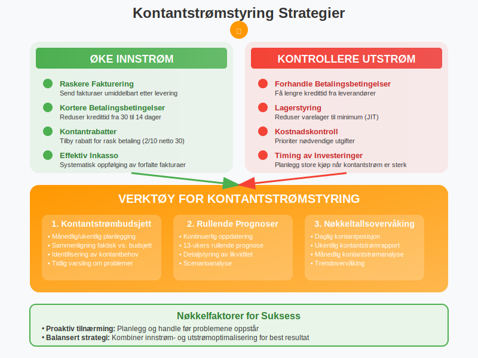
Strategier for å Forbedre Kontantstrøm:
Øke Innstrøm:
- Raskere fakturering: Send fakturaer umiddelbart etter levering
- Kortere betalingsbetingelser: Reduser kredittid fra 30 til 14 dager
- Kontantrabatter: Tilby rabatt for rask betaling
- Effektiv inkasso: Følg opp forfalte fakturaer systematisk
- Factoring: Selg kundefordringer for umiddelbar kontant
Kontrollere Utstrøm:
- Forhandle betalingsbetingelser: Få lengre kredittid fra leverandører
- Lagerstyring: Reduser varelager til minimum
- Kostnadskontroll: Prioriter nødvendige utgifter
- Timing av investeringer: Planlegg store kjøp når kontantstrømmen er sterk
Verktøy for Kontantstrømstyring:
1. Kontantstrømbudsjett
- Månedlig/ukentlig planlegging
- Sammenligning av faktisk vs. budsjett
- Identifisering av kontantbehov på forhånd
2. Rullende Prognoser
- Kontinuerlig oppdatering av prognoser
- 13-ukers rullende prognose for detaljstyring
- Tidlig varsling om likviditetsproblemer
3. Nøkkeltallsovervåking
- Daglig kontantposisjon
- Ukentlig kontantstrømrapport
- Månedlig kontantstrømanalyse
Kontantstrøm og Arbeidskapital
Arbeidskapital har direkte påvirkning på kontantstrøm. Endringer i arbeidskapitalkomponenter påvirker kontantstrømmen fra drift.
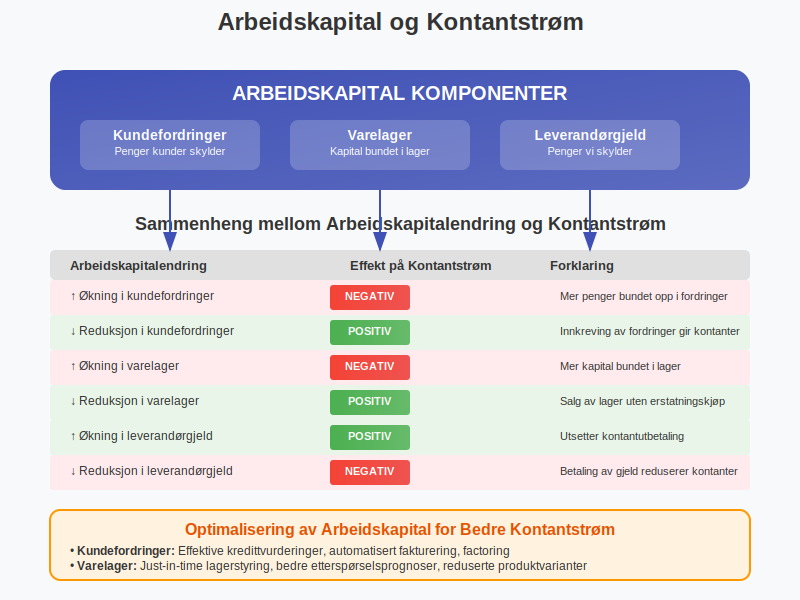
Sammenheng mellom Arbeidskapital og Kontantstrøm:
| Arbeidskapitalendring | Effekt på Kontantstrøm | Forklaring |
|---|---|---|
| Økning i kundefordringer | Negativ | Mer penger bundet opp i fordringer |
| Reduksjon i kundefordringer | Positiv | Innkreving av fordringer gir kontanter |
| Økning i varelager | Negativ | Mer kapital bundet i lager |
| Reduksjon i varelager | Positiv | Salg av lager uten erstatningskjøp |
| Økning i leverandørgjeld | Positiv | Utsetter kontantutbetaling |
| Reduksjon i leverandørgjeld | Negativ | Betaling av gjeld reduserer kontanter |
Optimalisering av Arbeidskapital for Bedre Kontantstrøm:
Kundefordringer:
- Implementer effektive kredittvurderingsprosedyrer
- Automatiser fakturering og oppfølging
- Vurder factoring for store fordringer
Varelager:
- Implementer just-in-time lagerstyring
- Forbedre etterspørselsprognoser
- Reduser antall produktvarianter
Leverandørgjeld:
- Forhandle bedre betalingsbetingelser
- Utnytt kontantrabatter når det er lønnsomt
- Planlegg betalinger for optimal kontantstrøm
Kontantstrøm i Ulike Bransjer
Kontantstrømmønstre varierer betydelig mellom bransjer, og det er viktig å forstå disse forskjellene for korrekt analyse.
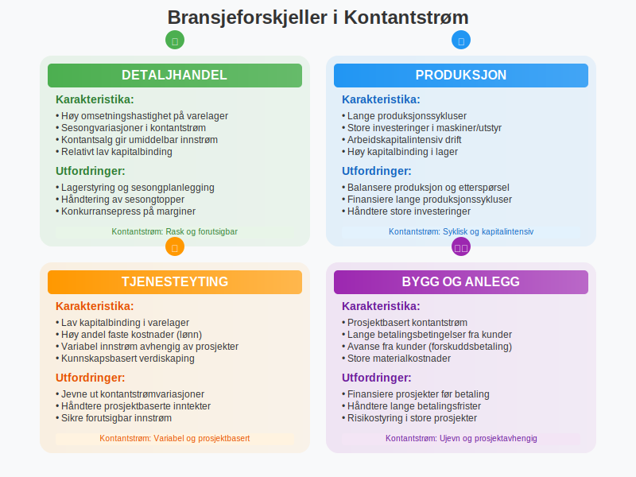
Bransjekarakteristika:
Detaljhandel:
- Høy omsetningshastighet på varelager
- Sesongvariasjoner i kontantstrøm
- Kontantsalg gir umiddelbar innstrøm
- Utfordring: Lagerstyring og sesongplanlegging
Produksjon:
- Lange produksjonssykluser påvirker timing
- Store investeringer i maskiner og utstyr
- Arbeidskapitalintensiv drift
- Utfordring: Balansere produksjon og etterspørsel
Tjenesteyting:
- Lav kapitalbinding i varelager
- Høy andel faste kostnader (lønn)
- Variabel innstrøm avhengig av prosjekter
- Utfordring: Jevne ut kontantstrømvariasjoner
Bygg og anlegg:
- Prosjektbasert kontantstrøm
- Lange betalingsbetingelser fra kunder
- Avanse fra kunder
- Utfordring: Finansiere prosjekter før betaling
Digitale Verktøy for Kontantstrømstyring
Moderne teknologi tilbyr mange verktøy for å forbedre kontantstrømstyring og -analyse.
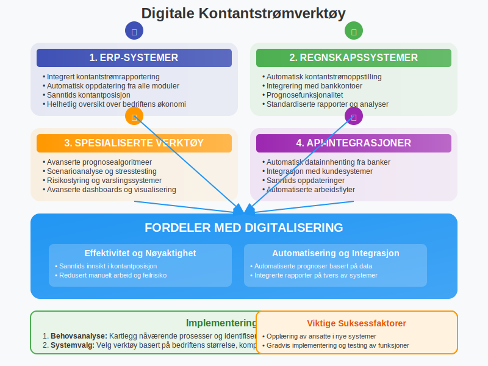
Kategorier av Digitale Verktøy:
1. ERP-systemer
- Integrert kontantstrømrapportering
- Automatisk oppdatering fra alle moduler
- Sanntids kontantposisjon
2. Regnskapssystemer
- Automatisk kontantstrømoppstilling
- Integrering med bankkontoer
- Prognosefunksjonalitet
3. Spesialiserte Kontantstrømverktøy
- Avanserte prognosealgoritmeer
- Scenarioanalyse
- Risikostyring
4. API-integrasjoner
- Automatisk datainnhenting fra banker
- Integrasjon med kundesystemer
- Sanntids oppdateringer
Fordeler med Digitalisering:
- Sanntids innsikt i kontantposisjon
- Automatiserte prognoser basert på historiske data
- Varslingssystemer for lav likviditet
- Integrerte rapporter på tvers av systemer
- Redusert manuelt arbeid og feilrisiko
Kontantstrøm og Finansiering
Kontantstrømanalyse er grunnleggende for å vurdere finansieringsbehov og -muligheter.
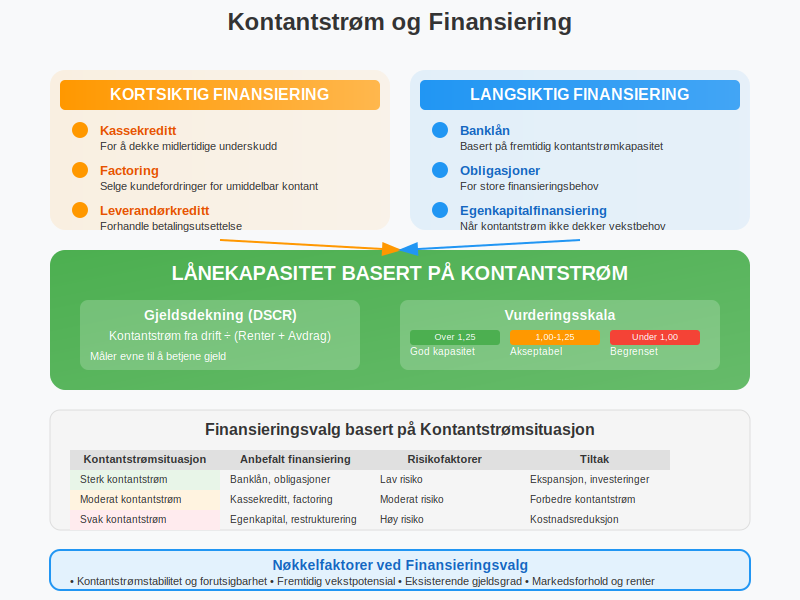
Finansieringsalternativer basert på Kontantstrøm:
Kortsiktig Finansiering:
- Kassekreditt: For å dekke midlertidige underskudd
- Factoring: Selge kundefordringer
- Leverandørkreditt: Forhandle betalingsutsettelse
Langsiktig Finansiering:
- Banklån: Basert på fremtidig kontantstrømkapasitet
- Obligasjoner: For store finansieringsbehov
- Egenkapitalfinansiering: Når kontantstrøm ikke dekker vekstbehov
Lånekapasitet basert på Kontantstrøm:
Gjeldsdekning (Debt Service Coverage Ratio): Kontantstrøm fra drift ÷ (Renter + Avdrag)
- Over 1,25: God lånekapasitet
- 1,00-1,25: Akseptabel lånekapasitet
- Under 1,00: Begrenset lånekapasitet
Kontantstrøm og Skatt
Kontantstrøm påvirkes av skattemessige forhold, og god planlegging kan optimalisere kontanteffekten av skatt.
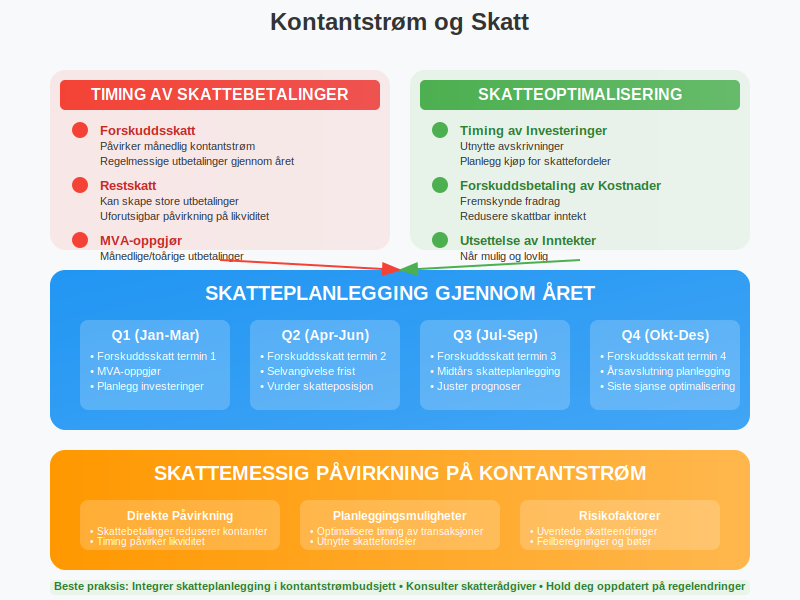
Skattemessige Faktorer:
Timing av Skattebetalinger:
- Forskuddsskatt: Påvirker månedlig kontantstrøm
- Restskatt: Kan skape store utbetalinger
- MVA-oppgjør: Månedlige/toårige utbetalinger
Skatteoptimalisering:
- Timing av investeringer: Utnytte avskrivninger
- Forskuddsbetaling av kostnader: Fremskynde fradrag
- Utsettelse av inntekter: Når mulig og lovlig
Vanlige Utfordringer med Kontantstrøm
Mange bedrifter opplever typiske kontantstrømutfordringer som kan håndteres med riktig planlegging og styring.

Typiske Utfordringer:
1. Sesongvariasjoner
Problem: Store svingninger i kontantstrøm gjennom året Løsning:
- Sesongbasert budsjetting
- Oppbygging av kontantreserver
- Fleksible finansieringsavtaler
2. Lange Betalingsbetingelser
Problem: Kunder betaler sent, leverandører krever rask betaling Løsning:
- Strengere kredittvurdering
- Kontantrabatter for rask betaling
- Factoring av kundefordringer
3. Vekstfinansiering
Problem: Vekst krever investeringer før inntektene kommer Løsning:
- Detaljert vekstplanlegging
- Stegvis ekspansjon
- Ekstern finansiering
4. Uforutsette Utgifter
Problem: Akutte reparasjoner, erstatninger eller bøter Løsning:
- Kontantreserver for uforutsette utgifter
- Forsikringsdekning
- Fleksible kredittlinjer
Beste Praksis for Kontantstrømstyring
Implementering av beste praksis kan betydelig forbedre bedriftens kontantstrømstyring og finansielle stabilitet.
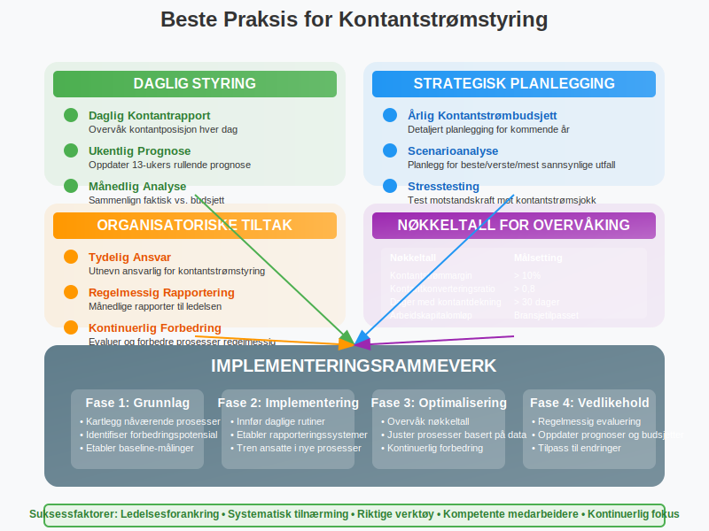
Anbefalte Praksiser:
Daglig Styring:
- Daglig kontantrapport: Overvåk kontantposisjon hver dag
- Ukentlig prognose: Oppdater 13-ukers rullende prognose
- Månedlig analyse: Sammenlign faktisk vs. budsjett
Strategisk Planlegging:
- Årlig kontantstrømbudsjett: Detaljert planlegging for kommende år
- Scenarioanalyse: Planlegg for beste/verste/mest sannsynlige utfall
- Stresstesting: Test bedriftens motstandskraft mot kontantstrømsjokk
Organisatoriske Tiltak:
- Tydelig ansvar: Utnevn ansvarlig for kontantstrømstyring
- Regelmessig rapportering: Månedlige rapporter til ledelsen
- Kontinuerlig forbedring: Evaluer og forbedre prosesser regelmessig
Nøkkeltall for Overvåking:
| Nøkkeltall | Formel | Målsetting |
|---|---|---|
| Kontantstrømmargin | (Kontantstrøm fra drift ÷ Omsetning) × 100 | > 10% |
| Kontantkonverteringsratio | Kontantstrøm fra drift ÷ Nettoresultat | > 0,8 |
| Dager med kontantdekning | Kontantbeholdning ÷ (Daglige driftskostnader) | > 30 dager |
| Arbeidskapitalomløp | Omsetning ÷ Gjennomsnittlig arbeidskapital | Bransjetilpasset |
Kontantstrøm og Verdsettelse
Kontantstrøm er grunnlaget for de fleste moderne verdsettelsesmetoder og er kritisk for å vurdere bedriftens verdi.
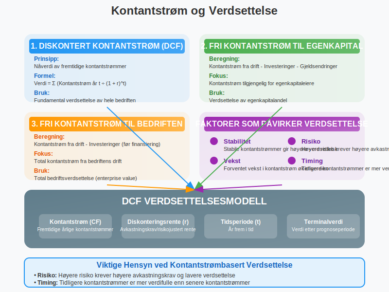
Verdsettelsesmetoder basert på Kontantstrøm:
1. Diskontert Kontantstrøm (DCF)
Prinsipp: Nåverdi av fremtidige kontantstrømmer Formel: Verdi = Σ (Kontantstrøm år t ÷ (1 + diskonteringsrente)^t)
2. Fri Kontantstrøm til Egenkapital
Beregning: Kontantstrøm fra drift - Investeringer - Gjeldsendringer Bruk: Verdsettelse av egenkapitalandel
3. Fri Kontantstrøm til Bedriften
Beregning: Kontantstrøm fra drift - Investeringer (før finansiering) Bruk: Total bedriftsverdsettelse
Faktorer som Påvirker Verdsettelse:
- Stabilitet: Stabile kontantstrømmer gir høyere verdsettelse
- Vekst: Forventet vekst i kontantstrøm øker verdien
- Risiko: Høyere risiko krever høyere avkastningskrav
- Timing: Tidligere kontantstrømmer er mer verdifulle
Konklusjon
Kontantstrøm er et av de viktigste målene på bedriftens finansielle helse og operasjonelle effektivitet. God kontantstrømstyring krever:
Nøkkelelementer for Suksess:
- Systematisk overvåking av alle kontantstrømkomponenter
- Proaktiv planlegging gjennom detaljerte prognoser
- Balansert tilnærming til innstrøm- og utstrømoptimalisering
- Integrert styring med arbeidskapital og finansiering
- Kontinuerlig forbedring av prosesser og systemer
Ved å implementere disse prinsippene kan bedrifter oppnå bedre likviditet, redusert finansiell risiko og økt verdi for eiere og interessenter. Kontantstrømstyring er ikke bare et regnskapsteknisk verktøy, men en strategisk kapabilitet som kan gi varig konkurransefortrinn.
Husk at kontantstrøm er livsnerven i enhver bedrift - uten tilstrekkelig kontantstrøm kan selv lønnsomme bedrifter gå konkurs. Derfor bør kontantstrømstyring være en prioritet for alle bedriftsledere og regnskapsansvarlige.